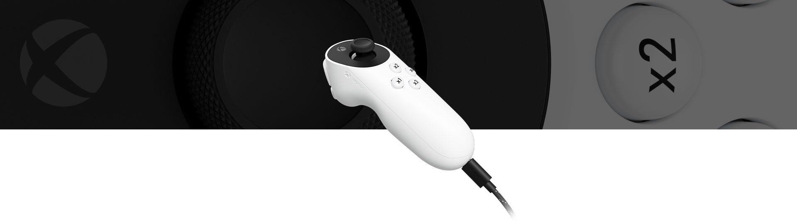
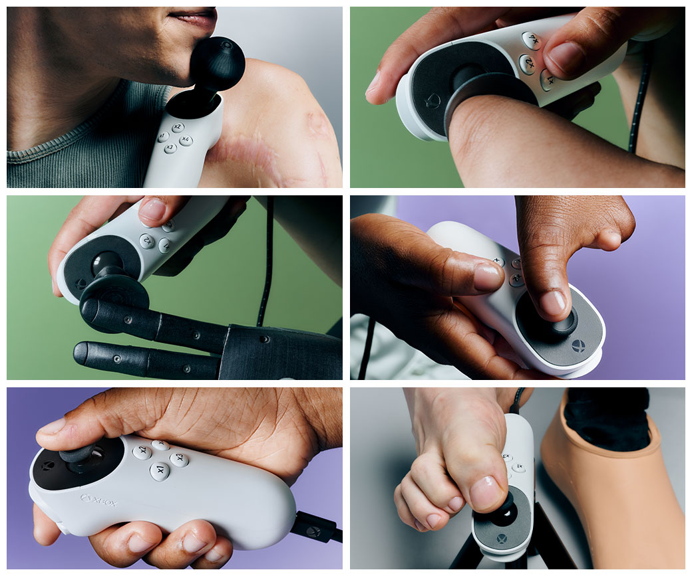

¿Qué es el Xbox Adaptive Joystick?
Según el anuncio oficial de Microsoft, el Xbox Adaptive Joystick fue lanzado en marzo de 2025. Es un dispositivo de entrada por cable pensado principalmente para personas con movilidad reducida y desarrollado con la participación de la comunidad de jugadores con discapacidad.
Permite personalizar la función de sus botones y combinarlo con otros mandos y accesorios para adaptar la forma de jugar a las necesidades y preferencias del usuario.

¿Por qué lo he elegido?
He elegido este dispositivo no solo por ser reciente, sino porque me parece una propuesta interesante y, sobre todo, muy humana: las personas a las que va dirigido han participado en su desarrollo.
Este joystick puede facilitar el acceso a los videojuegos a personas que encuentran dificultades para utilizar un mando convencional.
¿Cómo funciona?
- Controles: incorpora una palanca, cuatro botones frontales y dos traseros. La palanca también se puede pulsar como un botón.
- Personalización: la aplicación Accesorios de Xbox permite cambiar la función de los botones según las necesidades y preferencias del usuario.
- Conexión: funciona mediante un cable USB.
- Colocación: dispone de una rosca para fijarlo a un soporte y situarlo en una posición adecuada.
- Uso combinado: puede complementarse con otros mandos y accesorios. Para disponer de todas las funciones de un mando completo necesita dispositivos adicionales.
Para conocer sus controles, conexiones y requisitos con más detalle, puedes consultar la ficha oficial de Xbox.
Beneficios para la interacción persona-ordenador
- Adaptación a la persona: cambiar la función de los botones permite ajustar los controles a los movimientos que le resulten más accesibles al usuario.
- Flexibilidad de uso: la posibilidad de fijarlo a un soporte y combinarlo con otros dispositivos permite crear distintas configuraciones de juego.
- Reducción de barreras: ofrece una alternativa para personas que encuentran dificultades al sujetar un mando convencional o alcanzar sus controles.
- Participación de los usuarios: incorporar a jugadores con discapacidad en su desarrollo ayuda a tener en cuenta necesidades reales.
Su principal aportación a la IPO es ofrecer más posibilidades para adaptar el control a la persona, en lugar de exigir que todas las personas utilicen el mismo mando de la misma manera.

Del mando convencional al control adaptativo
1. El mando convencional
Los mandos tradicionales reúnen botones, palancas y gatillos en una estructura que normalmente se sostiene con ambas manos. Esto puede presentar dificultades para quienes no pueden mantener ese agarre o alcanzar determinados controles.
2. Xbox Adaptive Controller: 2018
Microsoft presentó un dispositivo que permite conectar botones, pulsadores y joysticks externos para crear configuraciones personalizadas. Supuso un cambio de enfoque: distribuir y adaptar los controles según las necesidades del jugador.
Puedes conocer sus antecedentes en la presentación oficial del Xbox Adaptive Controller.
3. Xbox Adaptive Joystick: 2025
El nuevo joystick amplía esas posibilidades con un control por cable, configurable y que puede fijarse a un soporte. Puede integrarse con el Adaptive Controller y otros mandos para construir una configuración adecuada para cada persona.
Esta evolución no consiste en que un dispositivo sustituya completamente al anterior, sino en ampliar las formas de interactuar. El Xbox Adaptive Joystick complementa los controles existentes y ofrece más opciones de adaptación.
Limitaciones
- Necesita complementos: no ofrece por sí solo todas las funciones de un mando completo. Para disponer de ellas necesita otros dispositivos, vendidos por separado.
- Requiere configuración: sus controles y su colocación deben ajustarse a las necesidades de cada persona.
- No es una solución universal: su utilidad depende de las capacidades del usuario, del juego y de la configuración elegida.
Antes de elegir una configuración, conviene consultar los requisitos y la compatibilidad en la ficha oficial del dispositivo.
Fuentes y créditos
El contenido de esta página se ha redactado con palabras propias a partir de las siguientes fuentes oficiales:
- Microsoft: anuncio de disponibilidad del Xbox Adaptive Joystick, 18 de marzo de 2025.
- Xbox: características, compatibilidad y fotografías del Xbox Adaptive Joystick.
- Xbox Wire: presentación del Xbox Adaptive Controller, 17 de mayo de 2018.
Las fotografías proceden de la página oficial del dispositivo y pertenecen a Microsoft/Xbox. Se incluyen como ilustración en este trabajo académico.